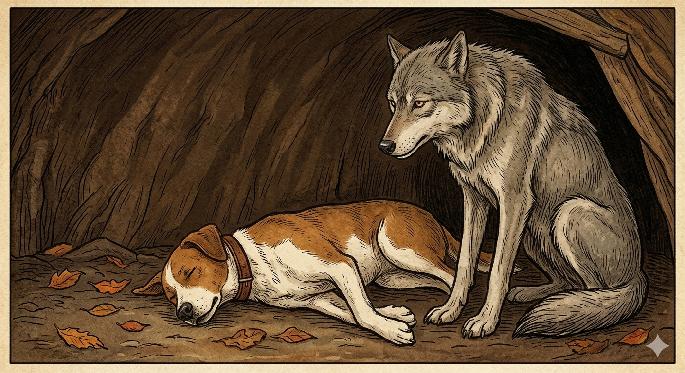

И.А. Дахкильгов. Хьехаме дувцарш - поучительные рассказы-притчи.
И.А. Дахкильгов. Хьехаме дувцарш - поучительные рассказы-притчи. Из ингушского фольклора.

Берза долаш чӀоагӀагӀа да
Къаенна, тишъенна уллаш хиннах бордз. ХӀанзолца цох кхераш лийна жӀали майрадаьннад. Даха, берза тӀаэттад из. Аьннад: - Циск мо гергъенна ма уллий хьо. Хьай ден тӀа эттай хьо хӀанз. Бага мел хинна царг дӀаяьннай ма йоахий хьа. ХӀама теда йиш йоацаш ма йисайий хьо. ДӀадаьннад хьадар! - Сов къаенна, лергашта къорайийрзай со. Ӏа дувцар хазац сона. Хьа лерге а яьй, алал хьей хье ала йоаллар, - аьннад берзо, жӀале дувцар шийна шаьра хеза доллашехьа а. Ера-м кхы а къора а йийрзай, аьнна, геттар майрадаьнна жӀали, ше аьннар кердадаккха дага, берза лерга юхе егӀай ший бат. Циггач берзо жӀале къамарг лаьцай. ЖӀали деттадаларах хӀама хиннадац. Берзо саӀийда йийнай из. ТӀаккха аьннад, йоах, берзо: - ЖӀалена ха дезар берза долаш цун цергел чӀоагӀагӀа долга.
РУССКИЙ
Волчьи десны сильнее
Состарился волк, лишился сил и лежит в норе. Прослышала об этом собака. До этих пор она тряслась при имени волка, а тут осмелела, пришла к волку и сказала: - Чего ты свернулся, как жалкий щенок? Теперь ты получил свое! К тому же, как я слышала, у тебя повыпадали все зубы. Теперь ты никого не сможешь загрызть. Пропащие твое дела! - Состарился я, оглох совсем, ничего не слышу. Наклонись к уху и повтори все, что ты сказала, - притворился волк глухим, хотя прекрасно все слышал. "Ко всему он еще и оглох", - обрадовалась собака. Она еще более осмелела и, чтобы повторить свои оскорбления, наклонилась к самому уху волка. Он тут же изловчился и челюстями вцепился в горло собаки. Как она ни билась, но жизни лишилась. И тогда волк сказал: - Собака, тебе надо было знать, что даже волчьи десны крепче собачьих зубов.
ENGLISH
A wolf's jaws are stronger
The wolf had grown old, lost his strength and was lying in his den. The dog heard about this. Until then, she had trembled at the mere mention of the wolf's name, but now she plucked up her courage, went to the wolf and said: 'Why are you curled up like a pitiful little puppy? You've got what you deserve! What's more, I've heard you've lost all your teeth. Now you won't be able to tear anyone to pieces. You're a lost cause! 'I've grown old and gone completely deaf; I can't hear a thing. Lean in close to my ear and repeat everything you said,' the wolf pretended to be deaf, though he could hear perfectly well. 'On top of everything else, he's gone deaf too,' the dog rejoiced. She grew even bolder and, to repeat her insults, leaned right up to the wolf's ear. He was quick to react and sank his jaws into the dog's throat. No matter how much she struggled, she lost her life. And then the wolf said: 'Dog, you should have known that even a wolf's gums are stronger than a dog's teeth.'
НОХЧИЙН
ПОГОВОРКИ
Берза долаш жӀале царгел чӀоагӀагӀа да. - Волчьи десна крепче собачьих зубов.Берзо аьннад: “Се товча лата отт со, се эшача яда отт со”. - Волк сказал: “Где вижу победу – иду в бой, где вижу поражение – отступаю”.Берзо дер де деннача цогала фоарт кагъеннай. - Потягавшаяся с волком лисица шею свернула.Дикачу баьречо зунгат хьовзала йоацача ди хьовзабу. - Хороший всадник проджигитует там, где муравью не развернуться.ЗӀамагӀчун низ дукхагӀа бале а хьаькъал кӀезигагӀа да, воккхагӀчун низ кӀезигагӀа бале а хьаькъал дукхагӀа да. - У молодого сил больше, да ума меньше; у старшего сил поменьше, но ума куда больше.Къаьна бордз говзагӀа хул. - Старый волк хитрее.Къаьнача берзо ши устагӀа бихьаб. - Старый (бывалый) волк двух овец уносит.Къаьначо ши никъ кхихьаб, къоначо цхьа никъ кхихьаб. - Старый пройдет двуми путями, пока молодой идет одним.СагӀадехарг жӀалех кхерац, жӀали гӀажах кхер. - Попрошайка собаки не боится – собака его посоха боится.Уйла ца еш, дош ма ала; аьнна ваьлча, юха а ма вала. - Не подумав, не говори, а сказав, не отступай.Цамогаш волчоа могаш хилар доккха рузкъа долга. - Больной знает, что здоровье – величайшее богатство.Царг йоацаш бордз хиннаяц, шелал йоацаш Ӏа хиннадац. - Нет ни волка без зубов, ни зимы без морозов.Ӏенне ца Ӏийначоа деггӀане ца дегӀар хиннад. - Настырный добивается того, что для него было недосягаемо.